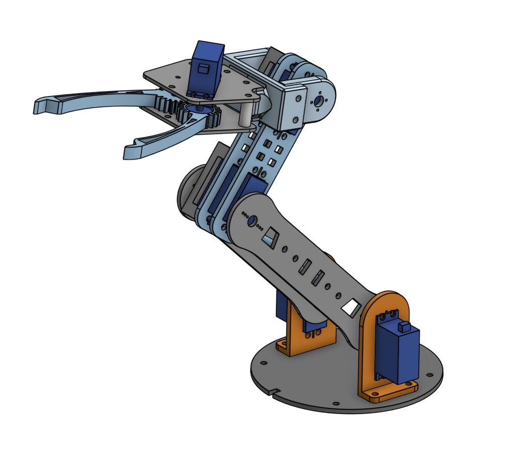
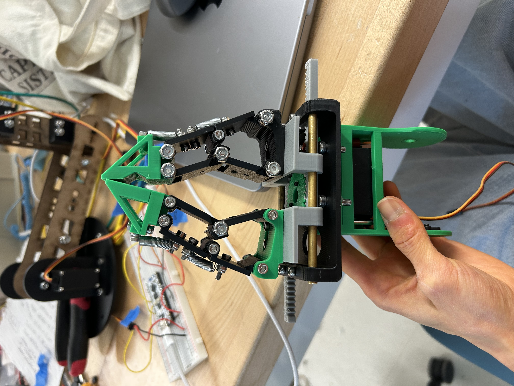
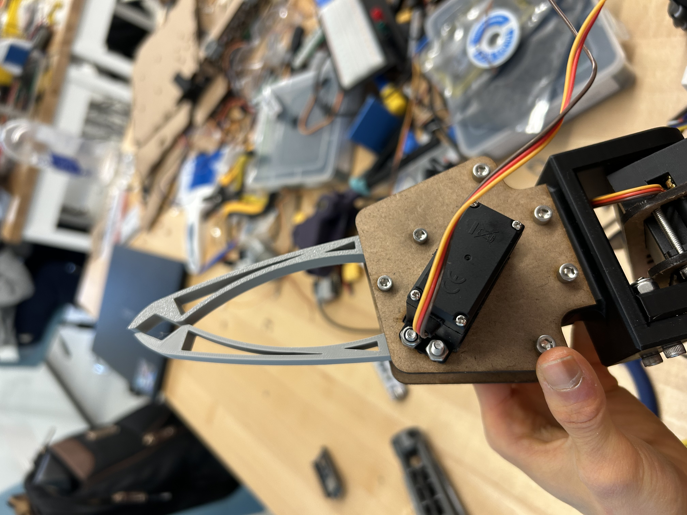
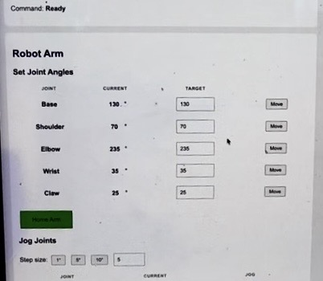
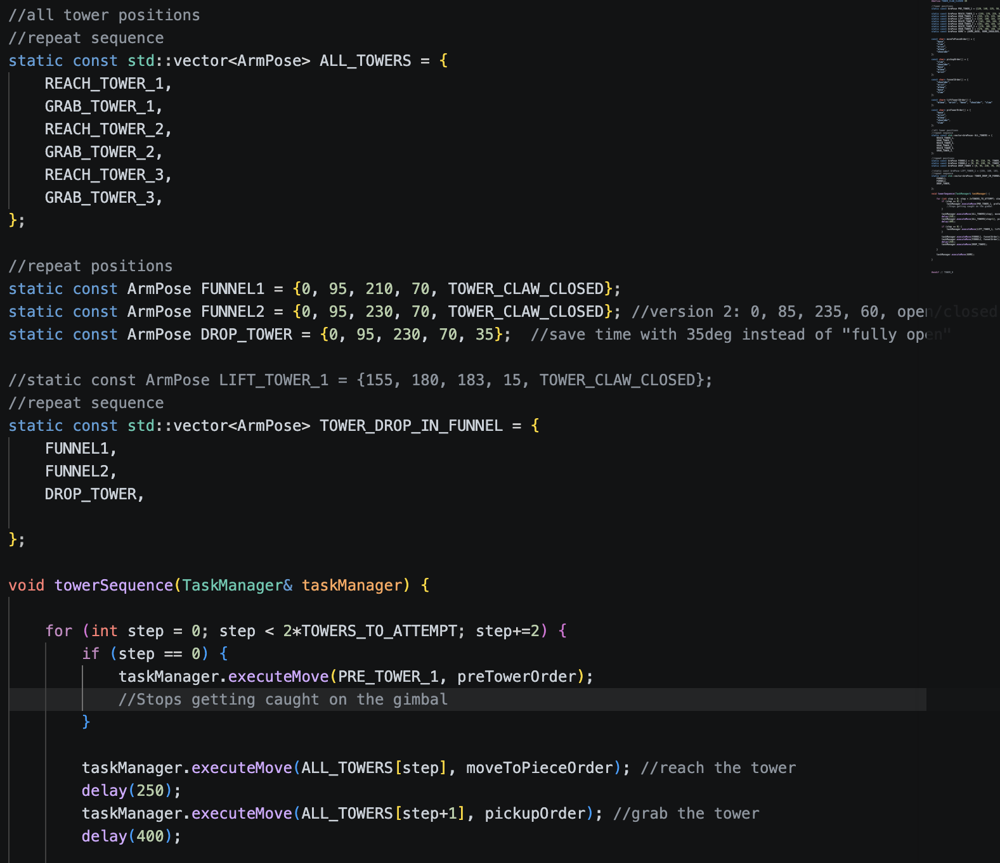

Every year, UBC’s Engineering Physics program throws second-year students into a trial by fire where they work in groups of four to build fully autonomous, competition-ready robots from scratch in five weeks. This year, robots had to compete in a "Martian Habitat” themed challenge, facing off head-to-head to complete as many tasks as possible - from assembling a habitat, to building a tower, detecting and acquiring metal rocks, and using computer vision to detect teletubbies - all within the time limit of two minutes. (See the CityNews segment about our competition here.)

Our robot: Ody the Noodle.
Affiliated with: UBC Engineering Physics
Project timeline: May - Aug. 2026
My role: Mechanical design, embedded controls, and system integration
Key technical skills: CAD; rapid prototyping; ESP32; C++; PWM; servo control
The Robotic Arm

Image of the arm assembly CAD in OnShape
With this year’s emphasis on “pick-and-place” tasks, it was essential to develop a robust and consistent manipulation system - which is where my work came into play. Over the course of the term, I developed a 5-DOF manipulator for our robot, from mechanical design and assembly to actuator integration and software motion control. I emphasized simplicity and modularity in the arm's design, allowing my team to test, iterate, and adapt quickly, producing a robot that could execute rock picking, tower building, and solar panel uncovering sequences by competition day.
All design, actuator, and material choices were optimized based on the following criteria:
- Modular mechanical interfaces
- Rapid manufacturability and assembly
- Sufficient reach for competition tasks
- Adequate actuator torque
- Stiffness to mass ratio
- Secure gripping across payload geometries
The Design Process
Knowing the time constraints and the benefits of rapid prototyping, I designed the arm modularly so that individual links and components could be replaced or modified without redesigning the entire mechanism. Linkages were 3D-printed or laser-cut, enabling design changes to move quickly from CAD to physical testing in response to the limitations discovered during integration.
Designing the End Effector
The most notable change that occurred throughout the design cycle was the structure of the end effector.
Initially, I created a translational rack-and-pinion gripper with adaptive fingers that could conform to objects of different shapes and sizes. While this was a strong and robust idea on paper, the resulting claw was incredibly bulky, heavy, and time-consuming to assemble, and was over-engineered for the context of the competition.

Initial rack-and-pinion gripper design.
This pushed me to take a step back and reconsider the design priorities of the project. Thus, for the final design, I went with a simple, two-finger gripper, driven by a single servo and two meshed gears. The V-prongs at the ends enabled consistent, stable gripping of the cylindrical “tower” pieces as well as the thin ring attachment to the solar panel cover, and the fingers’ long, curved geometry provided multiple contact points when picking up rocks.

Final two-finger gripper.
System-level Integration
Motion Control Stack
To control all six servos reliably, I wrote a custom PWM library for the ESP32 after initial tests with the standard Arduino Servo libraries caused servo jitter and intermittent failures to respond. The resulting control system allowed me to coordinate multiple joints and build higher-level motion sequences on top of the low-level servo control.
Joint Choreography
Because the competition objects were located at known positions, I used calibrated joint angles rather than dynamically planning trajectories during each run. To write, test, and debug these sequences, I hosted a UI on the ESP32 complete with live joint telemetry and jogging controls to adjust the arm’s position in real time. Once saved, these positions were coded into repeatable sequences for the competition tasks.
Integration with the robot-level state machine was accomplished through navigation information fed in from the robot’s other systems, such as tape or positional sensor data. When the robot reached the appropriate checkpoint, the corresponding arm sequence would be executed. This separation between navigation and manipulation kept the arm relatively self-contained while allowing it to respond to the robot's overall state. It also made sequences easy to update when the robot's route or other subsystems changed.

Image of robot arm UI

Excerpt from tower-building sequence code
The Result
By competition day, the arm could reliably execute all the sequences required for our team strategy:
- Identifying and picking up metallic rocks
- Building the tower
- Uncovering the solar panels
The arm demonstrated particularly strong and consistent performance during tower construction, where repeatable positioning and reliable manipulation were critical. The final system successfully executed the planned arm sequences under competition conditions.
Competition-day tower construction.
Reflection
Through my experience with Robot Summer, I learned that simpler designs are often the most effective, particularly when engineering under tight time constraints and as part of a larger team. My original adaptive gripper was technically interesting and it moved well, but solved a more complicated problem than the competition actually presented, and its mass and size hampered the arm’s ability to move comfortably and reliably. The simple two-prong claw ultimately accomplished the required tasks while being substantially easier to manufacture and integrate; choosing this design earlier could have freed additional time for testing and system integration.
Overall, Robot Summer was an invaluable exercise in systems-level engineering, teamwork, and optimizing designs for reliability and performance under tight time constraints. The opportunity to move between mechanical design, manufacturing, embedded software, electronics, controls, and integration and testing was incredibly exciting, and I’m looking forward to taking on more robotics and systems-related challenges in the future.